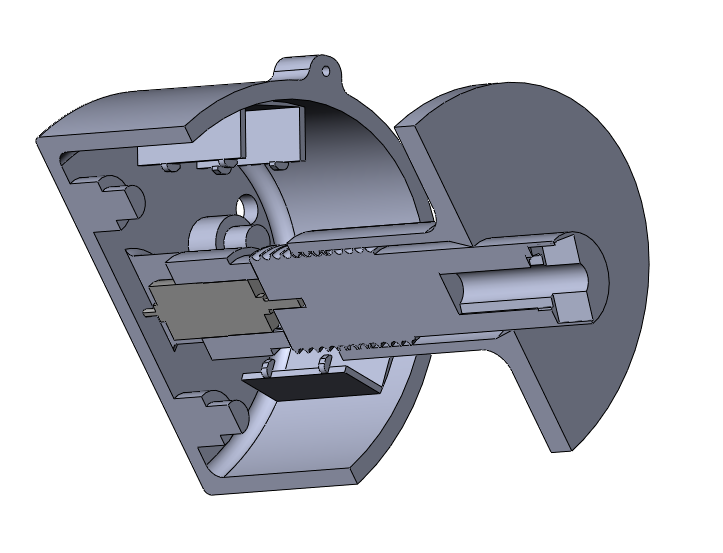

Expeience
The City College of New York
Baja SAE:CCNY Racing
Powertrain Design Engineer
CCNY racing, the City College of New York Baja SAE team, is a collegiate racing team that applies engineering practices to design and manufacture an all-terrain vehicle. My role consisted of converting a two-wheel drive to an all-wheel drive all-terrain vehicle. This transition required us to not only put an emphasis on maintaining structural integrity within the Baja but communication and collaborative teamwork was crucial to ensure a well constructed assembly. As a member of the powertrain system, I worked on making sure that the new powertrain system had power from the engine transferred to both the back and front wheels of the Baja. In order to ensure this was possible, the transmission system needed a full redesign. The first thing that needed a change was our gearbox. With our old gearbox outputting a gear ratio of 12.44:1, I had to ensure that the new gear ratio outputted a ratio of 3.70:1. The reason for this is due to the fact that we had to integrate two, arctic cat, differentials that had their own respectable gear reduction ratios which affects the overall speed and torque of the vehicle. In addition, in order to properly supply power to the front wheels, and have control over when we would want to actuate the clutch pack, a hydraulic clutch pack was designed that follows a similar concept as hydraulic brakes.
Miniature Shredder
Team Lead
For my Manufacturing and Processes class, my team and I were tasked to manufacture anything of our interest that fit within a $200 budget. A relevant theme for the project was that the product had to include a form of CNC machining at the very least. As a result, my team and I had become interested in the working mechanism of industrial shredders given their destructive power to shred objects into pieces through the use of shear stress. Given that they're used in business environments and large scale recycling plants, we decided to design and manufacture a miniature sized shredder for our project. The initial concept of the project started by creating a design and a bill of materials (B.O.M), for material selection, in order to ensure our design was within the range of our given budget. Our design was modeled and drafted on SolidWorks using proper GD&T guidelines to ensure proper fitment and assembly of our model. Following our design, we manufactured and machined our parts utilizing HSMWorks to generate g-code, 3D printing for rapid prototyping, and different manufacturing processes to fabricate our miniature shredder.


FEA Analysis of a Steel-Shaft-and-Pulley design
A steel pulley and shaft design was analyzed given some boundary conditions and basic guidance on how to use FEA software, as part of a computer-aided design course project. Given two boundary conditions, a 100 N-m torque was applied to one face of the shaft and the pulley was restrained on one of its cutouts, I had to validate whether the design of the machined parts were subject to failure. Ultimately, through a convergence test, a sensitivity test, and careful analysis of the design, I was able to evaluate the design. A pulley system was analyzed to determine the DOF that needed to be restricted within the simulation software, roll being the DOF that was left unrestricted. In order to evaluate the validity of my FEM solution, a convergence test was conducted utilizing h-elment refinement. I quickly found that the model provided to us had a sharp edge between the shaft and the pulley. This sharp rentract corner caused a stress singularity which led to an infinite stress value. In order to overcome this stress singularity, a fillet was applied between the shaft and the pulley given that it is a common method to reduce stress. Not only did this fix the stress concentration issue, as I was able to obtain a convergence graph, but it also served to be a design improvement on the model. As the fillet radius increased, the maximum stress decreased. By increasing the fillet radius, I changed one input parameter systematically and checked my results to see if they varied accordingly. This project gave me a solid foundation on the reliability of FEA results along with an understanding on how FEA software works.
The Zahn Innovation Center
Background

The Zahn Innovation was a skill development program that served students to gain practical and professional skills. As a manufacturing apprentice I utilized various manufacturing techniques to design and manufacture products for internal as well as external, client based, projects. Some of these techniques consisted of the use of 3D printers, laser cutter, lathe, manual mill, drill, CNC machining, and various hand tools.

Deployment Mechanism
A client based project that required the team to produce an athletic device case that deploys and retracts based on its use case. I was tasked to iterate and test the design process for the mechanism in order to identify any problems within the mechanism and make any necessary design changes. The mechanism that we decided to use for this follows a lead screw and a nut flange on a larger scale. The parts were designed in order to accomodate for the speed at which the mechanism deploys, sizing that accommodates a person wearing the device, and for the storage of electrical components. Additive manufacturing techniques were used to create a rapid prototype and proof of concept (P.O.C) to test the mechanism.

Mobile Whiteboard
The mobile whiteboard took place when a professor asked us to help with problems that existed within a mobile white board. The problems consisted of vibrational sounds when moving the board, uneven wheels, and a displeasing looking board. Vibrational sounds occured due to the boards slamming on the pipes within the frame when it was in motion. To resolve this issue, felt was placed in between the boards and pipes to get rid of noise all together. For the uneven wheels, set screws, locknuts, and loctite were used in order to properly level the wheels. The whiteboard was spray painted and shelves were laser cut and screwed on for supply storage whiel also being able to present a fresh new aesthetic look.


CNC projects
Bottle Cap opener
The team was tasked with producing the G-code for a bottle opener to be milled out using a HAAS CNC vertical milling machine. With the utilization of HSMWorks, a CAM software, I was able to learn about the fundamentals and cautions of CNC and tooling operations. This included material stock preparation, fixturing, and feeds and speeds.
Bone Holder
I took on a CNC project for a biomedical client as I wanted to learn more about the limits of this manufacturing technique. What stood out in this project was a 3mm thin slot that had to be cut out on one side of the model while a majority of the parts features lied on another side of the model. As a result, not only did I learn more about fixturing and feeds and speeds but the calibration of the machine itself played a major role in creating the product as I learned being a couple thousandths of millimeters off resulted in a failed first run.

Work Experience
Actasys
RDD Engineer
At Actasys I worked with a design team to test the efficiency of piezoelectric, synthetic jet actuators for their integration on a vehicle. These mechanisms were modeled and assembled in SolidWorks based on the client's parameters. The parameters consisted of specific sizing, angles, stiffness, aesthetics, and performance of the actuators. We worked on designing, testing, and fabricating linear and rotational models in order to determine the best configuration needed for the integration of the actuators. What I learned in this internship revolved around designing for manufacturing and assembling mechanisms and solving problems within the mechanisms themselves. Problems consisted of plastics not working together properly, inefficient use of actuators, tolerancing issues, fixtures, and vibrational issues.
Makelab
Additive Manufacturing Engineer
As an additive manufacturing engineer I am responsible for MakeLabs production of 3D prints. This includes maintaining a lab of 24 FDM and 8 SLA printers, coordinating efficient production schedules for our printers, and providing design changes to models for manufacturability purposes. Given that it is a startup environment, I had to learn various valuable tools and skills that translated into my role. By managing several projects at once, I have to make quick and creative decisions in order to meet client expectations. I work with a team to discuss project parameters and meet tight deadlines for models that vary in scale.
Extra
Trophy
The product I chose to reverse engineer, solid model, and document on SolidWorks was a trophy. A ruler and caliper was used to measure horizontal and vertical dimensions for the overall part. To obtain the approximate dimensions for the changing curvature along the trophy, galvanized wire was used. Freehand sketches were produced to detail the geometry and dimensions of the trophy. Furthermore, engineering drawings were created, following ASME Y14.5 standards, to represent major dimensions of major features.

Skeleton liquor Decanter

Given dimensions from a client based drawing, I was tasked to model a skeleton liquor decanter to the best of my ability. This proved to be a challenging task where organic curves made up a majority of the model. Ultimately, with this design project I was able to enhance my modeling skills by learning advanced surface modeling techniques. Techniques included deleting faces, trimming surfaces, lofting surfaces, thickening knitted surfaces only after making sure no surfaces are intersecting, etc. In addition, I learned the restraints that come with surface modeling, such as the extent at which the radius of a sketch can curve.
Contact
Lets get in touch!